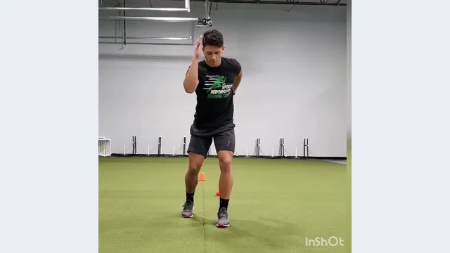

Uploaded demonstration01Relaxed arm action
Split-Stance Arm Drives
Practice strong arm rhythm while the trunk remains stable.
2 × 15 sec
HOW TO DO IT
- Stand in a stable split stance with knees softly bent and torso aligned.
- Keep elbows comfortably bent, hands relaxed and shoulders low.
- Swing arms forward–backward at a brisk rhythm without twisting the torso.
Coaching cueElbows back. Hands relaxed. Hips still.
Common mistake + recovery
Avoid: Punching across the body, shrugging the shoulders, or rocking at the waist.
Rest: 20–30 sec between sets